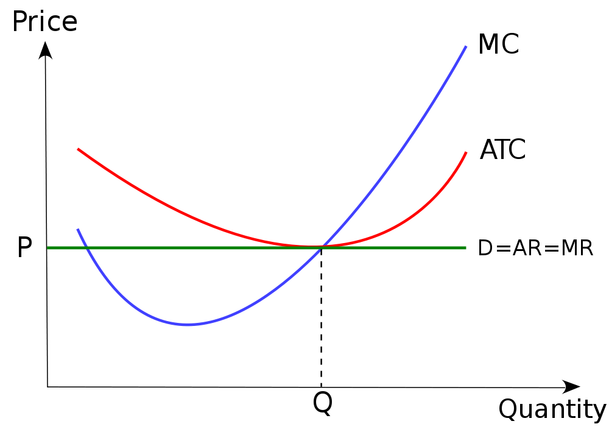
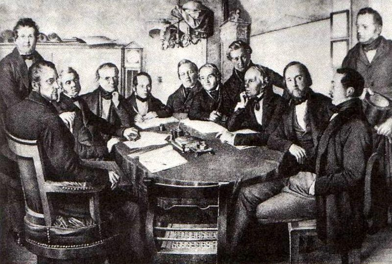

Contents · 22 slides
- The Use of Knowledge in Society
- What is the problem of rational economic order?
- Marginal Rate of Substitution
- But This Data Is Never Given to a Single Mind
- Mathematical Economics Tends to Obscure the Problem
- Planning
- Planning
- Planning
- Planning
- Knowledge
- Knowledge
- Knowledge
- Change
- Change
- Statistical Aggregates
- Communicating Changes Throughout the System
- Communicating Changes Throughout the System
- Communicating Changes Throughout the System
- The “Law” of One Price
- Prices: A Mechanism for Communicating Information
- The Result of Human Action But Not Human Design
- The Problem of Imputation
1 The Use of Knowledge in Society
2 What is the problem of rational economic order?
- “This important result tells us that utility is maximized when the consumer's budget is allocated so that the marginal utility per unit of money spent is equal for each good. If this equality did not hold, the consumer could increase his/her utility by cutting spending on the good with lower marginal utility per unit of money and increase spending on the other good.” -- Wikipedia
3 Marginal Rate of Substitution
4 But This Data Is Never Given to a Single Mind
5 Mathematical Economics Tends to Obscure the Problem

6 Planning
- All economic activity is planned.

7 Planning
- But who is doing the planning?
8 Planning
- Is it a single mind creating one master plan?
9 Planning
- Or a multitude of minds each making their own plans?
10 Knowledge
- What sort of planning will work best turns on the question of what sort of knowledge do we need.
11 Knowledge
- Purely technical knowledge could be assembled in a body of experts.
12 Knowledge
- But knowledge of the particular circumstances of time and place cannot be so gathered.
13 Change
- “Economic problems arise always and only in consequence of change.”
14 Change
- Even in regards to the use of multi-year investments like a chip fabricating plant, change is constant.
15 Statistical Aggregates
- By abstracting out details, they hide change.
16 Communicating Changes Throughout the System
- “How much knowledge does [the man on the spot] need to [meet change] successfully?”
- “There is hardly anything that happens anywhere in the world that might not have an effect on the decision he ought to make.”
- “It is always a question of the relative importance of the particular things with which he is concerned.”
17 Communicating Changes Throughout the System
- The solution? Market prices!
18 Communicating Changes Throughout the System
- The price of tin rises: the user does not need to know why!
19 The “Law” of One Price
- “Local prices are connected in a manner determined by the cost of transport, etc.”
20 Prices: A Mechanism for Communicating Information
- “It is more than a metaphor to describe the price system as a kind of machinery for registering change.”
- “individual producers watch merely the movement of a few pointers, as an engineer might watch the hands of a few dials, in order to adjust their activities to changes of which they may never know more than is reflected in the price movement.”
21 The Result of Human Action But Not Human Design
- “The price system is just one of those formations which man has learned to use… after he had stumbled upon it without understanding it.”
22 The Problem of Imputation
- How are the price of producers’ goods related to those of consumers’ goods?